Manual
How to play, sequence, shape, route and record your synths from the SP-404MKII.
Experimental. Modified firmware can brick your SP-404MKII. This version is tested on one unit only, with Roland 5.52 and DOOM OS 0.7.2 (build 359C), and it changes some of Roland's own routines. Keep Roland's original files so you can go back.
Quick start
Six steps from a freshly patched SP to a synth that plays and moves. Install first: see the patcher.
- Set up the SP. Set MIDI Mode to A and turn MIDI Through off. See SP settings.
- Connect. Run a MIDI cable from the SP's MIDI output to your synth's MIDI input. Most synths need a TRS-to-DIN adaptor, Type A (see Bigger setups). Note the channel your synth listens on.
- Add the synth. SHIFT + REMAIN, open DEVICES. On device 1, turn CTRL 3 to your synth's channel. Press VALUE and open NAME to give it a name.
- Make a MIDI Instrument. Open DOOM OS's instrument picker as you would to add a drum, pick MIDI and tap a free pad. The pad lights blue and the MIDI INSTRUMENT page opens: turn VALUE to your synth and press it. Hit the pad and the synth plays.
- Turn its dials. SHIFT + FX1 turns MIDI Controls on. Press RECORD SETTING, set CTRL 1's device with CTRL 1 and its CC with CTRL 2, press RECORD SETTING again. Now CTRL 1 moves that control on the synth.
- Record a sweep. Start a pattern, hold MARK and press REC, then turn the dial. It plays back on every loop.
Then add a chord, an echo or a rhythm with MIDI FX: PITCH/SPEED + FX1 on its track.
SP settings
Two settings in the SP's own SYSTEM settings change how MIDI Conductor behaves. Set them before you start.
MIDI Mode: set it to A (essential)
In mode B the SP spreads the banks over a keyboard range, so each bank sends higher notes than the one before and bank E sounds several octaves too high on a synth. In mode A every bank sends the same 16 notes. Switch to mode A and the problem goes away.
The SP sends a pad's note by its position in the bank and not by its number, so notes rise along a row and each row down is lower: pads 1 to 4 send 48 to 51, pads 5 to 8 send 44 to 47, pads 9 to 12 send 40 to 43 and pads 13 to 16 send 36 to 39. That is how the SP does it, and the patch doesn't change it.
MIDI Through: turn it off (recommended)
With MIDI Through on, the SP also passes what it receives straight to its MIDI output. That is in addition to anything the patch routes or plays, so a synth can hear the same notes twice, and a synth that echoes MIDI back can set up a loop. Turn it off and let the ROUTES grid decide what goes where.
MIDI Conductor settings
MIDI Conductor's own settings sit at the end of the DOOM OS tab in the SP's SYSTEM settings, under a MIDI CONDUCTOR heading after DOOM OS's own. They are saved with DOOM OS's settings and are the same in every project.
- START ANIM: ON plays the MIDI Conductor animation at power-on, straight after DOOM OS's. OFF skips it.
- PICKUP: ON makes a dial wait until it reaches its setting's value (see Pickup and catch), on MIDI Controls, GHOST and MIDI FX. OFF makes the dials act at once.
- CTRL VIEW: DIALS or BARS on the MIDI Controls page.
Reading the screens
Every MIDI screen has a title bar and a help line at the bottom. On the help line, a word on a lit box is a control on the SP and the plain words after it are what it does: VALUE PICK means turn VALUE to pick. C1, C2 and C3 are CTRL 1, 2 and 3, RSET is RECORD SETTING. PRESS means press VALUE.
A small arrow beside a value means the dial is waiting to pick it up: turn the dial the way the arrow points.
MIDI SETTINGS
SHIFT + REMAIN opens the MIDI SETTINGS menu from any DOOM screen, with MIDI Controls on or off.
| Entry | For |
|---|---|
| DEVICES | Your synths: channel, name, CC names, what uses them |
| ROUTES | Pass MIDI from one synth to another, or to the SP |
| PATTERN | Clear the current pattern's recorded dial moves |
Turn VALUE to pick, press it to open. EXIT goes back a level; in the menu it closes it. Which synth a pad plays is set on the pad's own MIDI INSTRUMENT page.
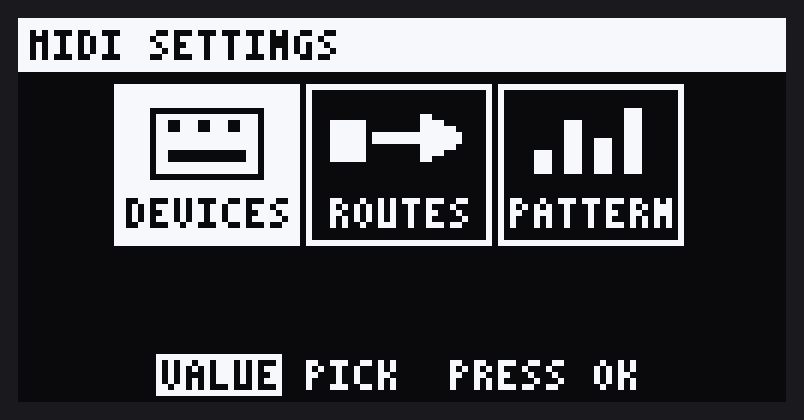
MIDI Instruments
A MIDI Instrument is a pad that plays a synth instead of a sample. You make one the way you make a DOOM OS instrument, and it gets a track in the pattern like any other.
Making one
- Open DOOM OS's instrument picker. MIDI sits after the instruments and before the kits; its description reads DEVICE OR CHANNEL.
- Pick it and tap a free pad. The pad gets a short silent sample named MIDI, a track in the pattern, and device 1 as its synth. The picker closes and the MIDI INSTRUMENT page opens.
- The pad lights blue: dim at rest, bright while you hold it.
- The pad's sample name follows its synth: the device's name,
DEV 3for a device with no name, orCH 5for a plain channel.
A MIDI pad is held at GATE and LOOP, so each note lasts as long as the step's gate, or as long as you hold the pad. Changing that in the SP's pad settings doesn't stick.
In a new project, device 1 has no channel yet. Give it one in DEVICES, or pick a RAW channel on the MIDI INSTRUMENT page, or the pad sends nothing.
The MIDI INSTRUMENT page
Choose which synth or channel the pad plays. It opens when you make the track, and again with VALUE on the first entry of DOOM OS's track menu (the pad and its name).
- Turn VALUE (or CTRL 1) to pick: your devices first, then RAW channels 1 to 16. The pick is drawn large, with its channel in a lit box.
- The change applies at once. Press VALUE or EXIT to close.
- The pads still play while the page is open, so you can try each synth.
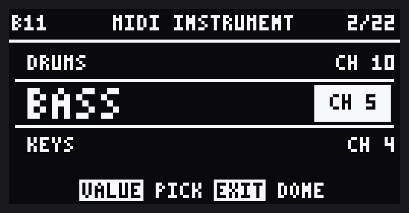
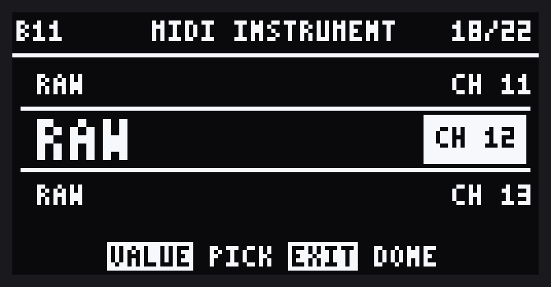
Removing one
Delete the pad's sample on the SP and the pad stops being a MIDI Instrument. REPLACE can't turn a pad into a MIDI Instrument yet; it shows NOT POSSIBLE.
Devices
A device is one of your synths: a channel, a name and, if you like, names for its CCs. Point pads, CTRLs and routes at a device rather than a bare channel, and when the synth's channel changes you change it once. There are seven devices.
DEVICES
The devices sit side by side, numbered 1 to 7 along the top. Under the current one it says what uses it: 2 PADS 1 CTRL, 1 ROUTE or NOT USED.
- Turn VALUE (or CTRL 1) to pick a device.
- CTRL 3 sets its channel, 1 to 16. All the way down is
NO CH. A new channel reaches every pad and CTRL that uses the device. A device atNO CHcounts as unused: it isn't offered in the CTRL device dial or the MIDI INSTRUMENT list until it has a channel. - Press VALUE for the device's menu. MARK opens DEVICE FILES.
- An arrow beside CH marks an input only device. A padlock after the name means it can't be renamed (GHOST).
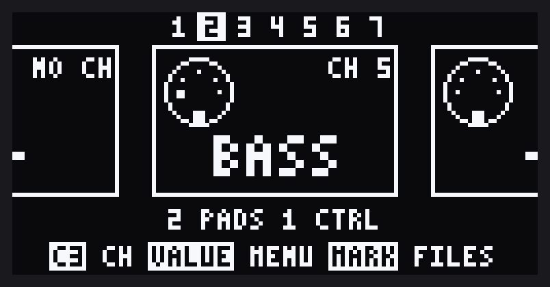
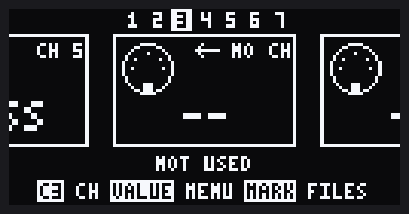
A device's menu
Turn VALUE to pick a row, press to open or switch it. EXIT goes back to DEVICES.
| Row | What it does |
|---|---|
| NAME | Up to 7 letters: A to Z, 0 to 9, space, - and .. CTRL 1 moves the cursor, VALUE changes the letter, EXIT finishes. |
| INPUT ONLY | YES for a controller that only sends to the SP. It's left out of the MIDI INSTRUMENT list and the CTRL device dial, and can't be a route's destination. It can only be set while nothing plays the device; a padlock shows until then. |
| CC NAMES | The device's CC list (see below). Opens for a named device. |
| RAW CCS | SHOW lets the CTRL dials and the CC MAP reach every CC number, not only the named ones. Handy when a list covers only part of a synth. |
| USAGE | How many pads, CTRLs and routes use the device (PAD:CTRL:ROUTE), and a list of them. |
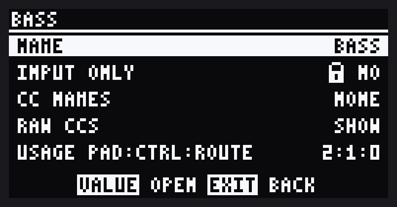
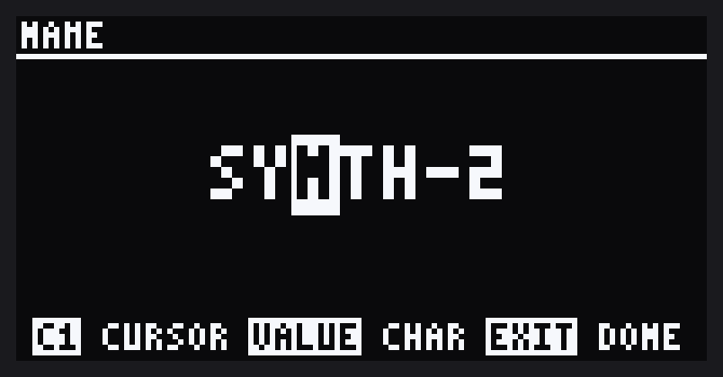
CC NAMES
Give a synth's CCs names and its dials pick CUTOFF instead of CC 43. The list shows each CC with its name, in CC order.
- Turn VALUE to pick, press to edit. In the editor CTRL 1 moves the cursor, CTRL 2 sets the CC number and VALUE the letters; EXIT finishes.
- MARK adds a name after the last one. DEL removes the one under the cursor straight away.
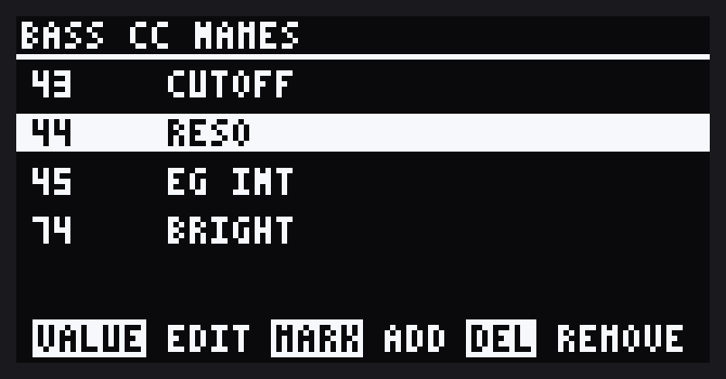
USAGE
Every pad, CTRL and route that uses the device, in a table. Press VALUE on a row to go there: a pad opens its MIDI INSTRUMENT page, a CTRL its MIDI Controls page, a route its settings. DEL on a pad or CTRL takes it off the device after asking; it keeps sending on the same channel.
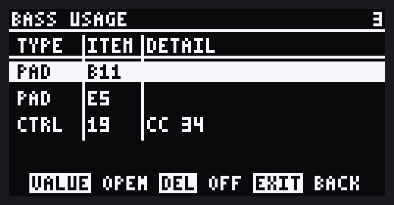
Device files
MARK on DEVICES opens DEVICE FILES: IMPORT or EXPORT DEVICES.CSV on the SD card. Each asks first, starting on NO: turn VALUE to YES and press it.
- EXPORT writes all seven devices: name, INPUT ONLY, RAW CCS, CC names and channel.
- IMPORT replaces each device that is in the file and leaves the others alone. A device line with a channel (the
CHcolumn, 1 to 16) puts the device on it; without one the device keeps the channel it had. - The file is plain CSV, one line per device and one per CC name. Make one from the synths you pick, or from a JSON or CSV list, on the patcher page.
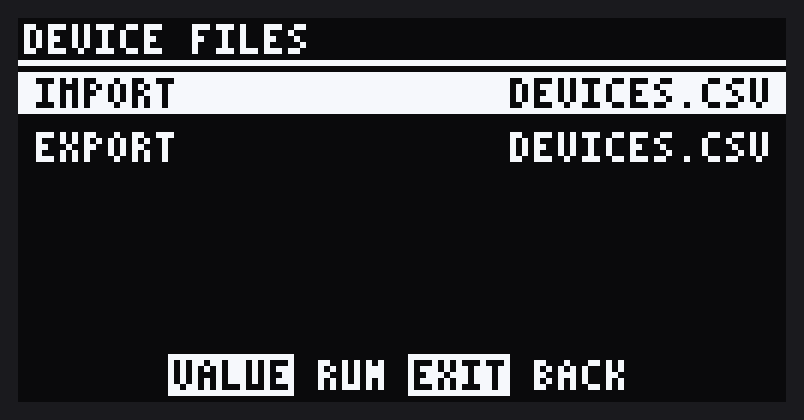
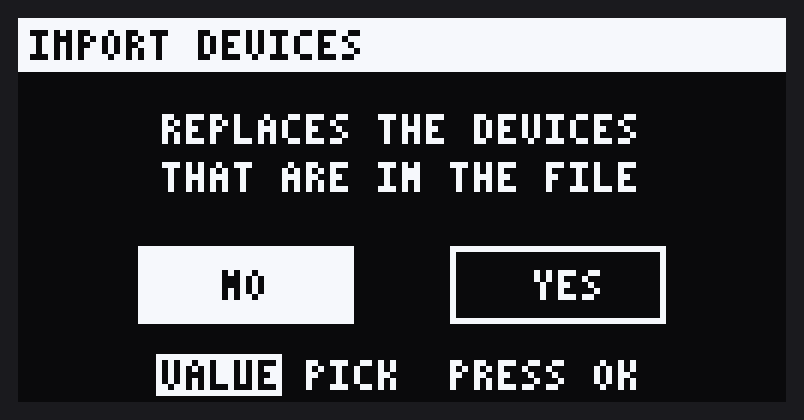
CC lists
Name a device after a synth the SP knows and it comes with its CC names. Any other synth still works with CC numbers, or with names you add in CC NAMES.
Pick your synths on the patcher page: + Add a synth, ✕ to remove. It makes a DEVICES.CSV with their names, CC names and channels; import it on DEVICES. Make a new one whenever your synths change, without patching again.
| Maker | Synths (device name) |
|---|---|
| Audiothingies | MicroMonsta 2 (MM2). For its second part, add a second MM2 device on the next channel. |
| Behringer | TD-3-MO (TD-3-MO): cutoff and accent only. Grind (GRIND): only the ASSIGN output follows CC, one at a time; set ASSIGN mode 13 to 16 for CC 1, 2, 4 or 7. |
| Elektron | Digitone II (DT2). Synth pages are numbered SYN 1A to 4H because they depend on the machine. Each track has its own channel. |
| Korg | Minilogue (MINILOG), MS2000, MS2000R, MS2000B and MS2000BR (MS2000), NTS-1 (NTS-1), volca Keys, Nubass, Beats, Sample, FM and Kick (VKEYS, VNUBASS, VBEATS, VSAMPLE, VFM, VKICK). Volcas need MIDI RX ShortMessage on to take CC. |
| Novation | Bass Station II (BS2): every control that has a CC number. Waveforms, envelope modes and the mod wheel can only be set by NRPN, so they are not listed. |
| Roland | S-1 Tweak Synth (S-1), on channel 3. |
| Yamaha | MODX M (MODX): the CCs it receives, including the assignable knobs at their factory numbers and Super Knob. Most of its sound parameters are NRPN or sysex only, so they are not listed. |
Your own synth
Add names on the SP in CC NAMES, or write a DEVICES.CSV and import it. On the patcher page you can also add a JSON or CSV list of your own, from the templates under the list. Names are 1 to 7 characters. There is room for 251 CC names in all.
Sequencing synths
Every step of a MIDI Instrument's track goes out as a note to the track's synth. Put tracks on different synths and one pattern plays them all.
- Melodies: in the piano roll, each step's pitch is added to the pad's note.
- Note length follows the step's gate.
- Mute and solo work as on sample tracks: a muted track sends no notes.
- Movement: record dial moves into the same pattern, or shape the notes with MIDI FX.
MIDI Controls
With MIDI Controls on, the CTRL dials send CC instead of changing the effect. There are 36 CTRLs: six banks of six.
- SHIFT + FX1..FX6 turns MIDI Controls on at that bank. The bank's FX key lights and the title bar shows it.
- VALUE flips between CTRL 1 to 3 (page 1/2) and CTRL 4 to 6 (page 2/2).
- EXIT turns MIDI Controls off.
The title bar names the bank and the three CTRLs on the page. Each CTRL shows its value as a number over a dial, then its device or channel and its CC. An A beside the dial means it has recorded moves. If you prefer bars to dials, set CTRL VIEW to BARS (see MIDI Conductor settings).
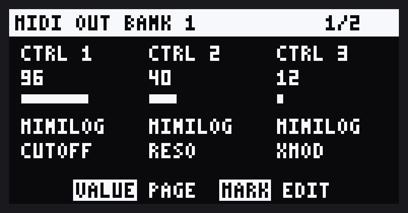
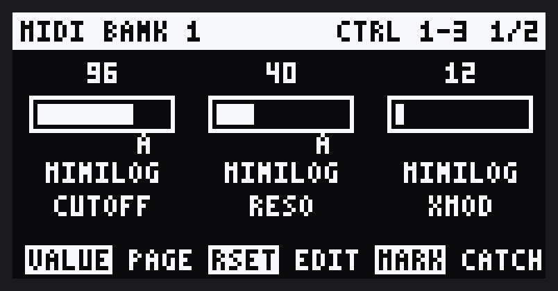
Editing a CTRL
RECORD SETTING on the MIDI page starts editing. Turn VALUE to pick a CTRL, then:
- CTRL 1 sets its device (1 to 7) or channel (1 to 16).
- CTRL 2 sets its CC, by name for a device with CC names.
RECORD SETTING again to finish. (SHIFT + RECORD SETTING is still the SP's own.)
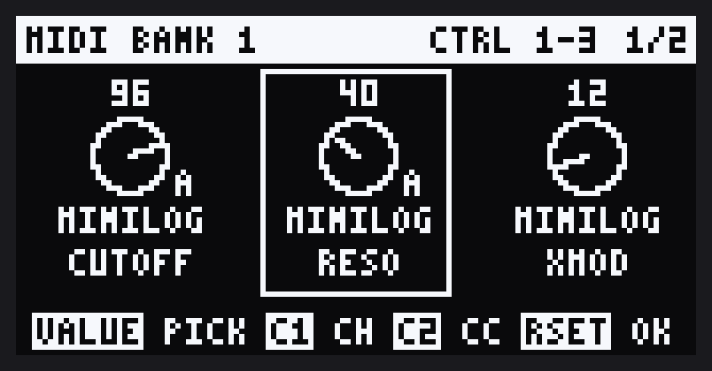
Pickup and catch
The three dials are shared by every bank and page, so when you arrive a dial is rarely where its control's value is. A dial that is not on its value does nothing until you turn it past that value, then it takes over. An arrow beside the dial shows which way to turn it. Changing page or bank, or turning MIDI Controls off and on, makes every dial pick up again. The same goes for GHOST and MIDI FX. Set PICKUP to OFF in the MIDI Conductor settings to make the dials act at once.
To go somewhere else at once, hold MARK and turn the dial. Nothing is sent while you hold it; the dial and number show where you have turned to, with a C beside it. Let go of MARK and the value jumps there, is sent once, and the dial follows from then on. Catch works the same on MIDI Controls, GHOST and MIDI FX. A tap on MARK on its own does nothing on these screens.
Recording dial moves
Record CTRL moves into a pattern and they play back as CC on every loop. Each CTRL gets 64 points per pattern, so slow sweeps stay smooth. GHOST and MIDI FX record their dials the same way.
- Hold MARK and press REC to start and stop recording. The title bar shows
REC. (REC on its own is still DOOM OS's pattern recording, and SHIFT + VALUE its mute.) - Moves play back whenever the pattern runs, with MIDI Controls on or off.
- Grab a CTRL during playback and you take over until the pattern loops.
- An A next to a CTRL means it has moves in this pattern.
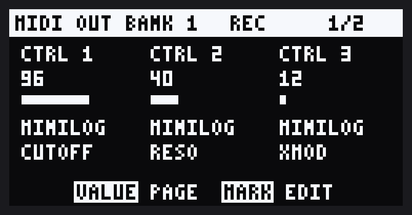
Every pattern (A1 to J16) keeps its own moves, saved on the SP with the project.
Clearing moves
All of these clear the current pattern only.
- DEL + turn a CTRL: that CTRL.
- SHIFT + DEL + FX1..FX6: that bank's six CTRLs.
- PATTERN in the MIDI SETTINGS menu: everything, after asking.
MIDI FX
MIDI FX change the notes a track plays before they reach the synth: add a chord, turn it into a rhythm, keep it in key, echo it, drop notes at random, or move a synth's controls in time with the music. Each MIDI Instrument or GHOST track has a chain of six slots, FX1 to FX6, run in order, so one slot's notes feed the next: Harmonize then Euclid plays the chord in a rhythm.
MIDI FX work on every kind of track: MIDI Instruments, GHOST, sample pads and DOOM OS's own instruments. On a MIDI Instrument or GHOST track they take the notes from the pattern, from the pads, and from a synth routed to the track's device.
On samples and DOOM OS instruments
Give a sample track or a DOOM OS instrument track a chain and its pattern steps and pad hits go through it too. The extra notes play the pad again.
- Echo, Chance, Randomize, Euclid, Loop Stretch, Time Elastic: repeat, drop or move the pad's hits.
- Harmonize, Scale and Echo's PITCH change the pitch only when the SP's pad mode is chromatic. On plain pads the extra notes play at the pad's own pitch, and Scale does nothing.
- Euclid's GATE goes up to TIE: each hit rings until the next one, like a one-shot. That suits samples best.
- LFO and ENV can move the SP's mixer and MIDI FX settings. A sample has no synth, so their CC to a device does nothing.
- Tracks without a chain play as they always have.
Long samples with Echo or Harmonize can use up the SP's voices; shorter sounds work best.
Using them
- On DOOM OS's page, hold PITCH/SPEED and press FX1..FX6: that slot of the current track. The title reads pad, slot and effect:
C6 MIDI FX1 HARMONIZE. - An empty slot: turn VALUE through the 11 effects and press it to add one.
- An effect: CTRL 1 to 3 set the three settings on screen. Turn or press VALUE for the next page.
- Hold MARK and turn a dial to catch it. START/END switches the slot on and off, keeping its settings; switched off, its waiting notes (an Echo's repeats) stop. A tap on DEL removes the effect (no question), so you can pick another.
- Hold REVERSE for a quick look at the whole chain. PITCH/SPEED + another FX key goes to that slot.
- MARK + REC records dial moves into the pattern; DEL + turn a dial clears one. EXIT closes.
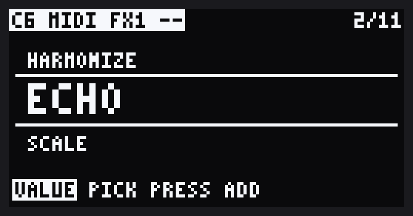
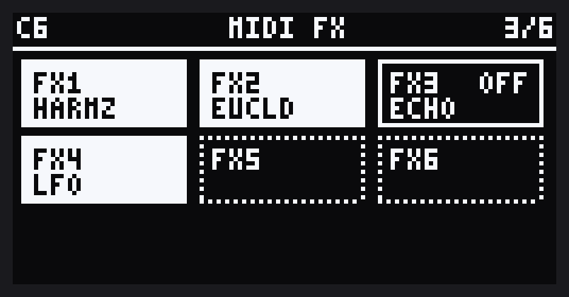
The CHAIN page
PITCH/SPEED + RECORD SETTING opens the current track's chain and keeps it up, to switch, reorder and remove effects.
- Turn VALUE to pick a slot. A frame shows which.
- Turn CTRL 1 to move the picked effect along the chain. The others shift up to make room.
- Turn CTRL 2 to set its SOURCE: CHAIN (left) takes what the slot before it sends, PAD (right) takes the pad's own note. A PAD slot shows PAD in its box.
- START/END switches it on or off. A tap on DEL removes it.
- Press VALUE to open that slot's own page; EXIT comes back to the chain. EXIT on the chain closes it.
Effects normally run in a line, each taking what the one before sends. A SOURCE PAD slot works beside the line instead: it takes the note you played, and its notes join the rest. Some examples:
- Euclid (HELD) in FX1, Euclids with SOURCE PAD in FX2 and FX3: three rhythms from one key.
- Harmonize in FX1, Echo with SOURCE PAD in FX2: the chord, and echoes of just the note you played.
- Scale in FX1, Randomize with SOURCE PAD in FX2: the played note in key, plus a wandering one beside it.
Notes an effect makes itself (a Euclid's hits, a Loop Stretch's) go past a SOURCE PAD slot without changing.
A moved effect takes everything with it: its settings, its recorded dial moves in every pattern, an LFO or ENV aimed at it, and the CC MAP mappings to it.
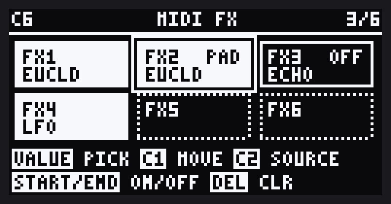
The chains are saved with the project. A chain belongs to the track's pad, so it plays the same in every pattern.
The effects
| Effect | What it does | Settings |
|---|---|---|
| HARMONIZE | Adds up to seven notes to each note: a chord from one key. | NOTE 2 to NOTE 8: OFF or −36 to +36 semitones |
| ECHO | Repeats each note in time, fading, and can climb in pitch. | RATE, REPEATS (1–16), DECAY, PITCH (±12 per repeat), GATE |
| SCALE | Keeps every note in a key. | KEY, SCALE (major, minor, the modes, harmonic and melodic minor, pentatonics, blues), SNAP (DOWN, UP, NEAR or DROP) |
| CHANCE | Each note plays or not, at random. LOOP repeats earlier choices, so the randomness can settle into a pattern. | CHANCE, LOOP, LENGTH (1–16) |
| RANDOMIZE | Random changes to pitch, octave and velocity. | PITCH, OCTAVE, VELO, AMOUNT, LOOP, LENGTH, SHAPE (EVEN or BELL), BIAS |
| DISPATCH | Shares notes out over up to three synths: in turn, a chord's notes split, or at random. | MODE (ROUND, CHORD, RANDOM), TO 1, TO 2, TO 3 (THIS track's synth or a device) |
| EUCLID | Plays held notes in an even rhythm of hits over steps. NOTE plays the held note, a shift of it, or a note of its own (a drum, say). Set the Euclids after the first to SOURCE PAD and they layer into a polyrhythm from one key. | RATE, STEPS (1–32), HITS, ROTATE, GATE (up to TIE: each hit rings until the next), NOTE (HELD, a shift, or a fixed note) |
| LOOP STRETCH | Replays the track's own pattern at another length, so it drifts against the others and meets them again. | LENGTH (1/32 to 2 BARS), DIR (FORWARD, REVERSE, PINGPNG) |
| LFO | A wave that moves a CC on the track's synth, or a setting of another slot. | RATE (1/16 to 8 BARS), SHAPE (SINE, TRI, SAW, SQUARE, RANDOM, DRIFT), DEPTH, CENTER, and its TARGET |
| ENV | An envelope started by each note, moving a CC or a setting of another slot. | DEPTH, ATTACK, DECAY, SUSTAIN, RELEASE, CENTER, and its TARGET |
| TIME ELASTIC | Plays the track's pattern faster or slower than the tempo, falling back into step every few bars. Press VALUE to put it back in step now. | SPEED (±50 %), FINE, RESYNC (NEVER, 1 to 16 BARS) |
Rates run from 1/32 to 1/2, with triplets and dotted values. Percentages show as plain numbers, as the SP's font has no % sign.
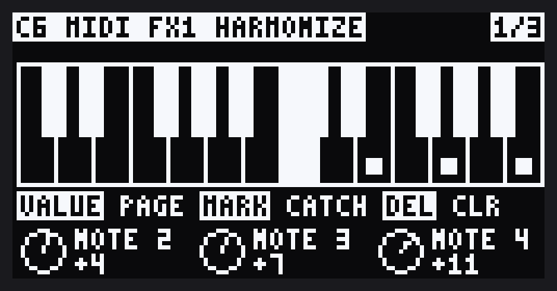
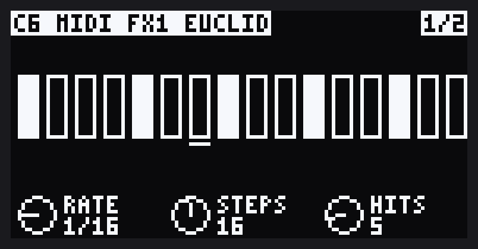
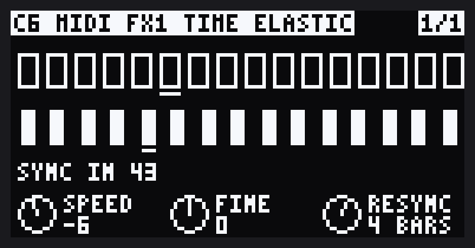
LFO and ENV
What an LFO or ENV moves is its TARGET: a CC on the track's own synth, or a setting of another slot on the same track (FX1..FX6), such as a Euclid's HITS or an Echo's DECAY. Both pages show the wave, with the TARGET named under it, for example TARGET MS2000 CUTOFF or TARGET FX2 ECHO DECAY.
A new LFO or ENV has no TARGET (NO TARGET shows) and moves nothing until you set one. To set or change it, press RECORD SETTING: the TARGET list opens. Turn VALUE to pick CC or a slot and press it to open its list (the synth's named CCs, or the slot's settings), then turn and press again to set it. EXIT steps back. Nothing changes while you browse, so a playing LFO keeps moving what it moved until you press.
DEPTH goes both ways: a negative depth moves the other way.
To spare the MIDI cable, an LFO or ENV sends at most about a hundred CCs a second to a synth, and only when the value changes. A large jump still goes at once. To GHOST it sends every step, as GHOST is inside the SP.
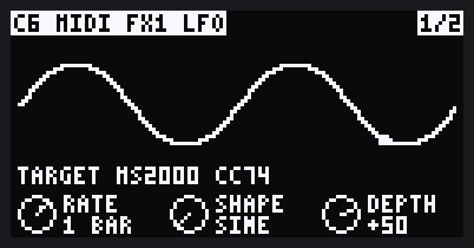
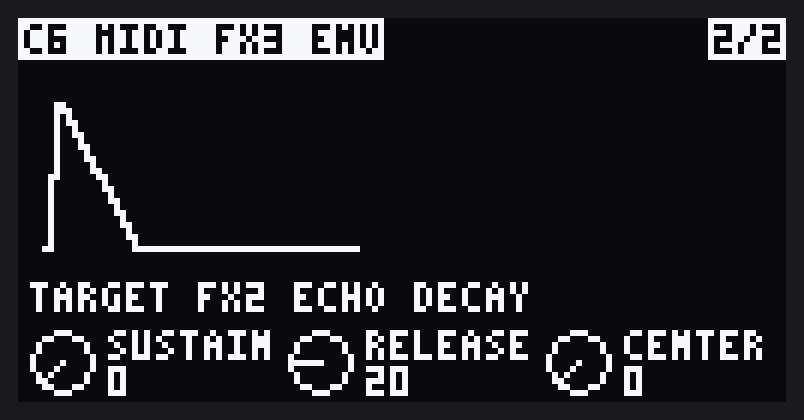
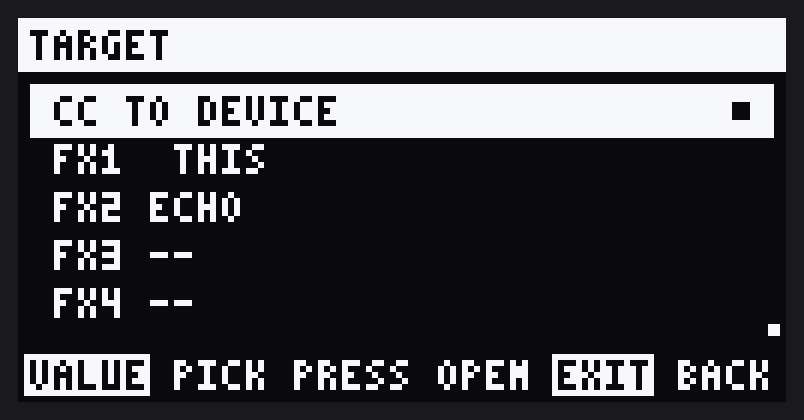
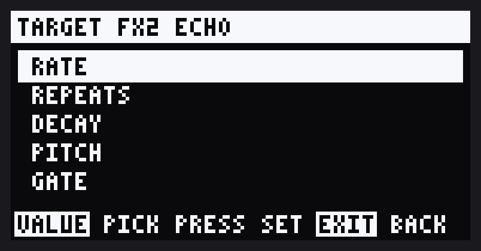
Controlling them from a synth
Any MIDI FX setting can be turned from a dial on another synth or controller: see the CC MAP.
Routing
One keyboard can play every synth in your rig. Notes and CC messages can be passed to and from any device with a MIDI DIN connection.
The SP sits in the middle. It receives MIDI on its MIDI input and sends it on from its MIDI output. Add each synth as a device, then use routes to choose which device feeds which.
The ROUTES grid
Rows are the synths that send (FROM, devices 1 to 7). Columns are where it goes (TO, devices 1 to 7, then SP). A lit cell is a route that's on.
- Turn VALUE to move cell by cell, or pick the row with CTRL 1 and the column with CTRL 2.
- CTRL 3 switches the cell on (up) or off (down).
- Play a synth and the cursor jumps to its row.
- Press VALUE to choose what the route passes. This also switches it on.
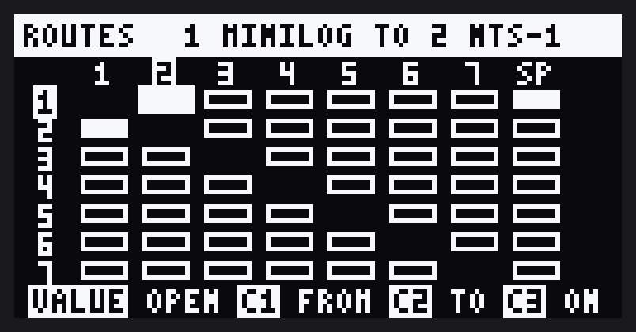
Light several cells in a row to send one synth to several. A synth with no routes plays the SP as normal. Once it has a route, the SP only hears it if the SP cell is lit too. An input only device's column is blank.
What a route passes
Four switches: NOTES, CC, BEND and PRES (aftertouch). Turn VALUE to pick, press to switch. A new route passes notes only, so a stray mod wheel doesn't reach anything. Switch everything off and the route goes off. MARK opens the route's CC MAP.
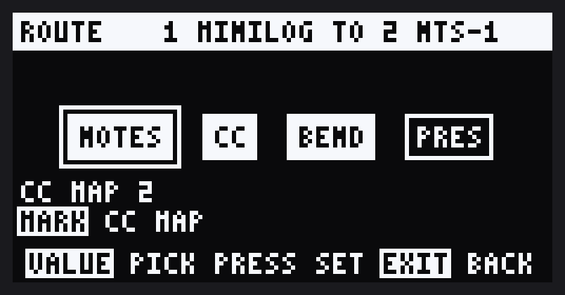
Notes to the SP
Notes routed to the SP play the track DOOM OS is on (turn VALUE on DOOM's page to pick another).
- A sample track: the pad plays, pitched like the SP's own keyboard. The SP only takes notes C2 to C4 (36 to 60), so notes outside that are moved by octaves to fit.
- A MIDI Instrument or GHOST track: the note goes to that track's synth as played, through the track's MIDI FX. Your keyboard plays whichever synth the current track plays.
- While DOOM OS is recording or rehearsing, the note is recorded on that track, at the pitch and velocity you played, with the length you held it.
The CC MAP
Synths rarely share CC numbers, so CC passes through a route only by its CC MAP: a list of mappings, each turning one incoming CC into one control. A CC that isn't in the map of a route to the SP reaches the SP as it is.
The map has three columns: FROM, the dial on the sending synth; TO, the control it moves; and RANGE, the lowest and highest values it sends.
- Open it with MARK on a route, or with CC on a route that has no mappings yet.
- On + ADD, turn a dial on the sending synth (or CTRL 1) to make a mapping.
- CTRL 1 sets FROM, CTRL 2 sets TO. Controls are named for a device with CC names.
- CTRL 3 sets the lowest value, SHIFT + CTRL 3 the highest. Set the lowest above the highest and the mapping runs backwards.
FULLmeans the whole range. - SHIFT + DEL removes the mapping under the cursor. CLEAR ALL, under + ADD, removes them all after asking.
- Turn VALUE to move between rows.
One dial can drive several controls: add a mapping for each. Once a route has mappings, CC on the route screen switches them on and off without losing them. There is room for 64 mappings in all.
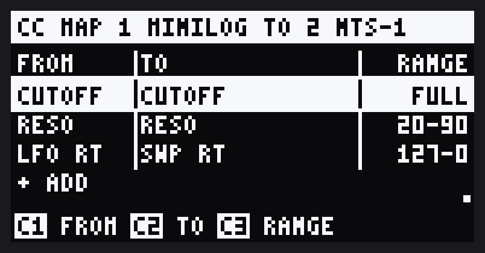
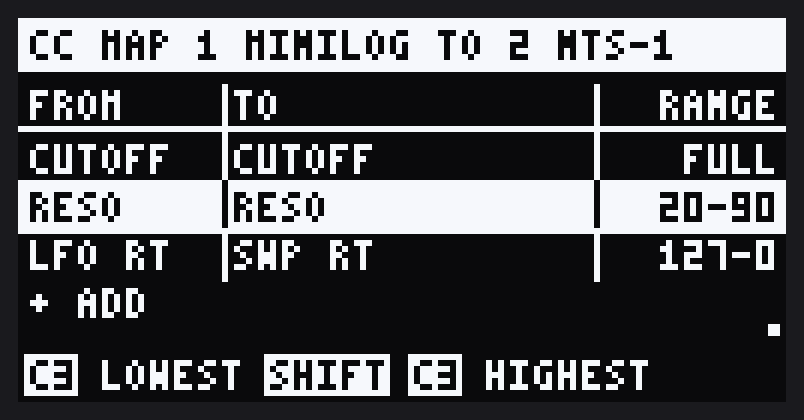
Mapping to the SP
On a route to the SP, a mapping's TO is a setting of a track in the pattern on screen, T1 to T16. Press VALUE on the mapping to pick it: the track, then the setting.
| Setting | Reads | How it moves |
|---|---|---|
| Mixer: LEVEL, PAN, BUS, MUTE, SOLO | T1 LEVEL | At once. MUTE and SOLO switch on from the middle of the dial up. |
| A MIDI FX setting, FX1 to FX6 | T3 FX3 DEPTH | Picks up like a CTRL dial (unless PICKUP is OFF). Recorded when MIDI FX recording is on. Reads -- if the slot now holds another effect. |
| EQ: LO, MID, HI × GAIN, FREQ, Q | T2 EQ LO GAIN | At once, the same as DOOM OS's EQ screen. |
The range is shown in the setting's own units where it has them: dB, Hz or K for the EQ, a MIDI FX setting's own values.
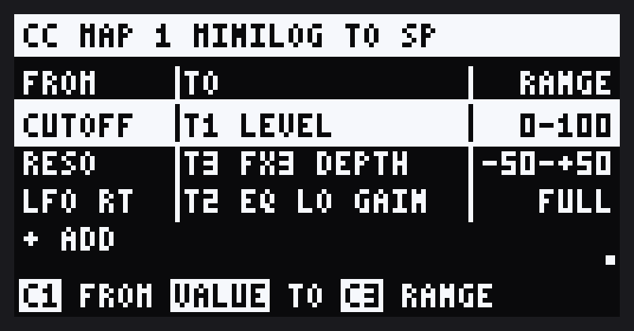
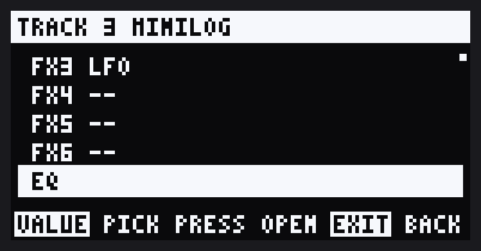
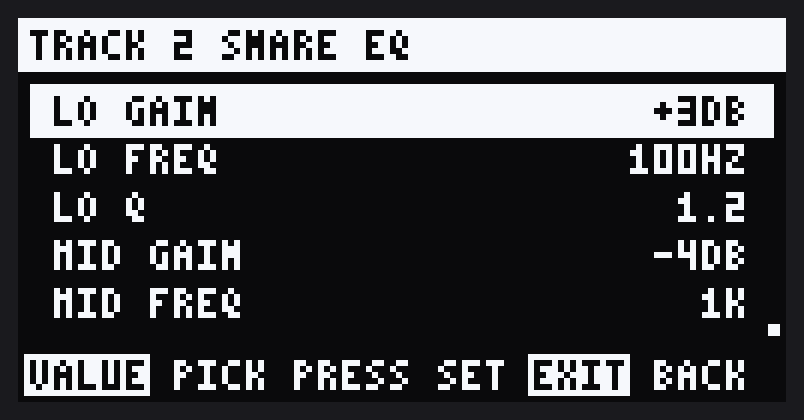
DOOM OS has eight EQs to share between pads. When all eight are in use, a mapping can't switch on a ninth pad's EQ, as on DOOM OS's own EQ screen.
Routes, mappings and ranges are saved with the project as you go.
GHOST
There is a small synth inside the SP. It's called GHOST. It plays through DOOM OS's mixer like a pad, and you play it the way you play any other synth: from MIDI Instruments, patterns, MIDI Controls, MIDI FX and routes.
Waking it
- On DOOM OS's page, press ROLL + REVERSE. GHOST wakes up and becomes a device, device 7 if that is free.
- Press ROLL + REVERSE again to let it rest. While it rests it makes no sound, and ROLL + FX does what it does on the SP.
- GHOST is awake or resting per project, and the SP remembers it after a restart.
Playing it
- Tracks: make a MIDI Instrument and pick GHOST on its MIDI INSTRUMENT page.
- Dials: set CTRLs to GHOST in MIDI Controls. GHOST's controls use the Minilogue's CC numbers.
- Other synths: route a synth or keyboard to GHOST.
- MIDI FX work on GHOST tracks too.
GHOST's device has a padlock: its name and CC names are fixed.
Mixer and EQ
GHOST takes its LEVEL, PAN and BUS from DOOM OS's mixer, and its EQ from DOOM OS's EQ, like a sample track. GHOST is one synth, so all GHOST tracks share them: change one GHOST track and the others follow. SETUP's BUS is the same setting. SETUP's LEVEL is GHOST's own level, with the mixer's on top.
Its screens
ROLL + FX1..FX6 opens a bank of settings. The oscilloscope fills the top of the screen and shows what GHOST is playing: the wave swells and fades with the envelope and shrinks as you turn LEVEL down. The bank's name and the page number sit in its corners, and the three settings are below it, each with a small dial. When a screen opens or turns over, the keys that work on it show over the bottom of the scope for a few seconds.
| Bank | Page 1/2 | Page 2/2 |
|---|---|---|
| FX1 VCO 1 | WAVE, OCTAVE, SHAPE | PITCH, LEVEL, NOISE |
| FX2 VCO 2 | WAVE, OCTAVE, SHAPE | PITCH, LEVEL, MOD (OFF, SYNC, RING, BOTH) |
| FX3 FILTER | CUTOFF, RESO, EG INT | TYPE (2 or 4 POLE), KEY TRK, VEL TRK |
| FX4 AMP EG | ATTACK, DECAY, SUSTAIN | RELEASE |
| FX5 EG | ATTACK, DECAY, SUSTAIN | RELEASE, PTCH EG, XMOD |
| FX6 LFO | WAVE, RATE, INT | TARGET (FILT, SHAPE, PITCH), EG MOD |
- CTRL 1 to CTRL 3 set the three settings on screen. A dial that is not on its setting waits until it reaches it (see Pickup and catch); hold MARK and turn to catch it.
- VALUE flips between page 1/2 and 2/2. ROLL + the same FX key does too.
- RECORD SETTING opens the GHOST MENU: SETUP (GHOST's LEVEL, its BUS: DRY, BUS 1 or BUS 2, and VOICES, 1 to 4) and its programs.
- MARK + REC records dial moves, as on MIDI Controls; ROLL + DEL + FX1..FX6 clears a bank's.
- EXIT goes back to DOOM OS.
VCO 2 starts silent: turn up its LEVEL on page 2/2 to hear it.
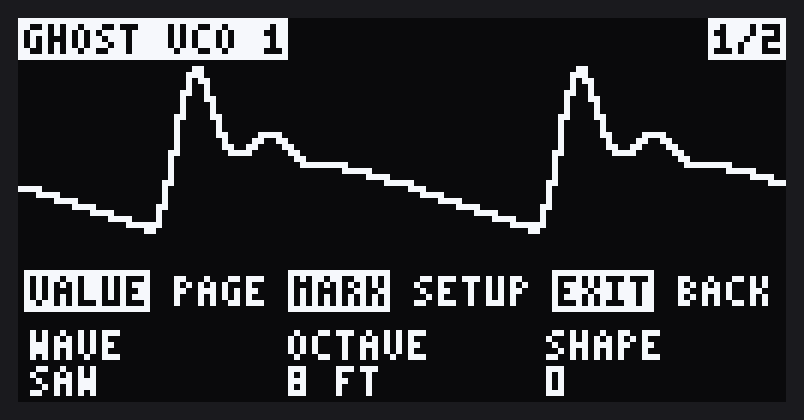
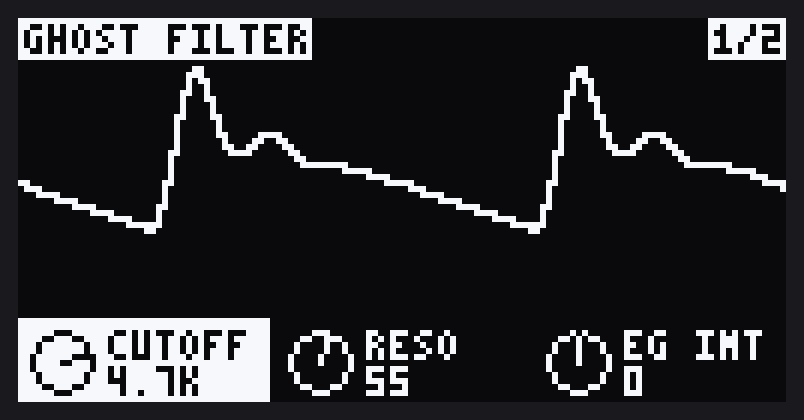
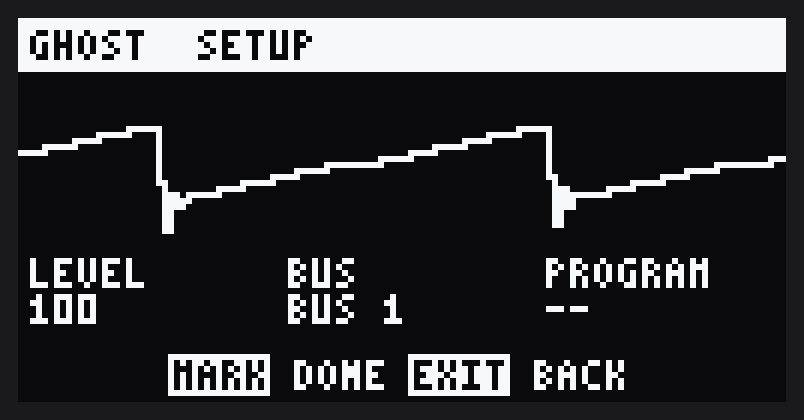
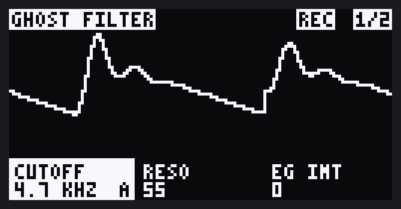
Programs
RECORD SETTING on a GHOST screen opens the GHOST MENU: SETUP, then the programs. Turn VALUE to pick, press it to open; EXIT goes back.
- LOAD PROGRAM: 20 factory sounds, then your own. Each plays as you turn onto it. Press VALUE to keep it; EXIT puts your sound back.
- SAVE PROGRAM: 16 slots, U01 to U16. Name it with VALUE (letter) and CTRL 1 (cursor), then MARK to save. A slot in use asks first. A program keeps the dials and VOICES, not LEVEL or BUS.
- PERSIST PATCH CHANGES: the sound GHOST starts with after power-on.
The factory sounds: INIT, BASS, SUB, PAD, SYNC, PLUCK, BRASS, ACID, WOBBLE, STAB, SUPSAW, HOOVER, REESE, ANTHEM, STRINGS, EPIC, FIFTHS, ABYSS, FATBASS and MASSIVE. Programs are the same in every project.
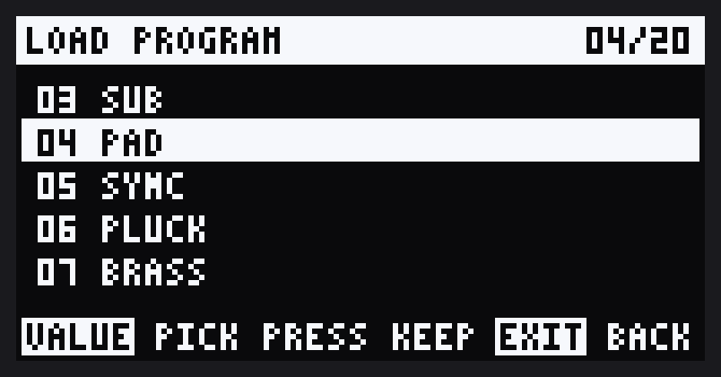
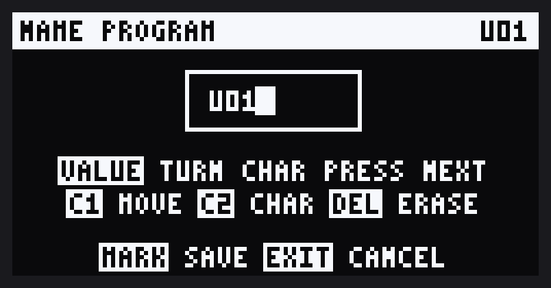
Projects
Your MIDI setup belongs to the project, like its samples and patterns. Load another project and you get its own:
- devices: channels, names, INPUT ONLY, RAW CCS and CC names;
- MIDI Instruments and which synth each plays;
- MIDI Controls' CTRL assignments and recorded moves;
- routes, CC MAP mappings and ranges;
- MIDI FX chains and their recorded moves;
- whether GHOST is awake.
Everything is saved on the SP a moment after you change it. Delete a project and its MIDI setup goes with it. A new project starts empty: no devices named, no channels, no routes. To carry devices from one project to another, export them and import them in the new one.
The MIDI Conductor settings and GHOST's programs are the same in every project.
Bigger setups
The SP has one MIDI input and one MIDI output. Two small boxes take it from one synth to a whole rig: a thru box to reach more synths, and a merger to play the SP from more than one.
Cables
The SP's MIDI sockets are 3.5 mm TRS jacks, Type A. Most synths have 5-pin DIN sockets, so you need a TRS-to-DIN adaptor or cable for each SP socket you use. Make sure it is Type A: a Type B adaptor is wired differently and won't pass anything. A synth with its own Type A TRS jacks takes a plain TRS-to-TRS cable.
More synths: a MIDI thru box
Everything the SP sends leaves from its one output, each synth's part on its own channel. A thru box, also called a MIDI splitter, copies that stream to several outputs, one cable per synth. Every synth hears everything and plays only its own channel.
- Daisy-chaining works too: SP to synth A, synth A's MIDI THRU to synth B. It's fine for two or three synths. Each hop adds a little delay, so for more synths a thru box keeps timing tight.
- Synths with only a MIDI IN, like the volcas, can't pass MIDI on. Give them a thru box output, or put them last in a chain.
- Set every synth to its own channel, matching its device in DEVICES. Two synths on one channel both play.
More players: a MIDI merger
To route synths through the SP, their MIDI outputs have to reach its one input. A merger combines two or more MIDI streams into one. Keep each synth on its own channel: that's how the ROUTES grid tells them apart.
- MIDI over USB from a computer or phone is a second input, routed the same way, so you may not need a merger for that.
- Only send what you route. A synth that streams a lot of CC, such as every dial move, shares the merger's bandwidth with the others.
Key summary
| Keys | Does |
|---|---|
| SHIFT + REMAIN | Open or close the MIDI SETTINGS menu |
| SHIFT + FX1..FX6 | MIDI Controls on, bank 1 to 6 |
| PITCH/SPEED + FX1..FX6 | MIDI FX: that slot of the current track |
| REVERSE held, on a MIDI FX screen | A look at the chain |
| PITCH/SPEED + RECORD SETTING | MIDI FX: the CHAIN page (move, source, switch, remove) |
| ROLL + FX1..FX6 | GHOST's settings, bank 1 to 6 |
| ROLL + REVERSE | Wake GHOST in this project, or let it rest |
| VALUE | Pages; in menus, pick and open |
| RECORD SETTING | MIDI Controls: edit CTRLs. GHOST: the GHOST MENU (SETUP, programs) |
| MARK held + turn a dial | Catch (MIDI Controls, GHOST, MIDI FX). Elsewhere MARK opens: a route's CC MAP, DEVICES' device files |
| START/END | MIDI FX and the CHAIN page: the slot on or off |
| MARK held + REC | Record dial moves on or off (MIDI Controls, GHOST, MIDI FX) |
| DEL + turn a dial | Clear that dial's moves in this pattern |
| DEL, tapped | MIDI FX: remove the effect. CC NAMES: remove a name |
| SHIFT + DEL + FX1..FX6 | Clear that bank's moves in this pattern (MIDI Controls) |
| ROLL + DEL + FX1..FX6 | Clear that bank's moves in this pattern (GHOST) |
| SHIFT + DEL | CC MAP: remove a mapping |
| EXIT | Back one level, or back to the screen you came from |
DOOM OS's own SHIFT shortcuts that would catch you out are off while our screens are up: holding SHIFT doesn't switch its help mode, and SHIFT + PATTERN SELECT doesn't undo.
A plain FX press is always the SP's own effect. If its screen comes up over MIDI Controls, GHOST or MIDI FX, the dials are the effect's until you press EXIT or the same FX again.
Limits
- MIDI goes out of the MIDI output only. USB MIDI out isn't supported; routing takes MIDI in from both.
- With MIDI Controls on, the CTRL dials don't move the SP's own effect.
- GHOST plays up to four notes at once, and its screens open from DOOM OS's page only.
- 7 devices, 251 CC names, 64 CC MAP mappings, 6 MIDI FX per track.
- MIDI FX at once: 32 notes held with added notes, 96 notes waiting to play, 8 Euclids, 4 Loop Stretch or Time Elastic, 16 LFOs and ENVs.
- Two devices on one channel look like one synth to the router.
- Routing passes notes, CC, bend and aftertouch. Clock, start/stop and SysEx stay with the SP.
- A synth that echoes CC back, or a routing loop, may cause feedback. Untested.
- Works only with Roland 5.52 and DOOM OS 0.7.2 (359C), which is built into the patch. The patcher refuses any other file, so new Roland or DOOM OS releases wait until they've been tested.
Support
MIDI Conductor is free to use. If it's useful to you, you can support its development on Patreon.